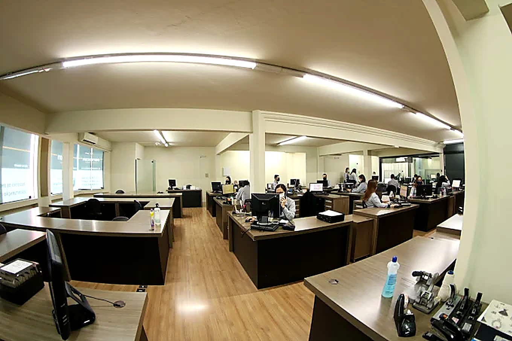
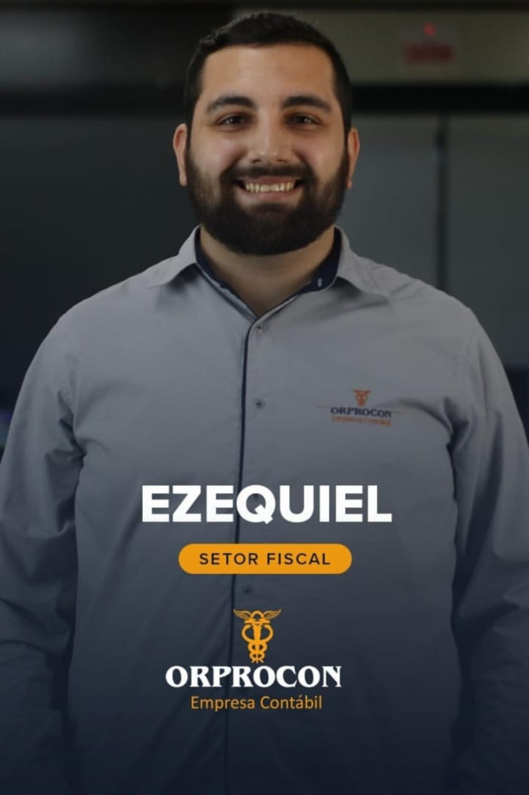
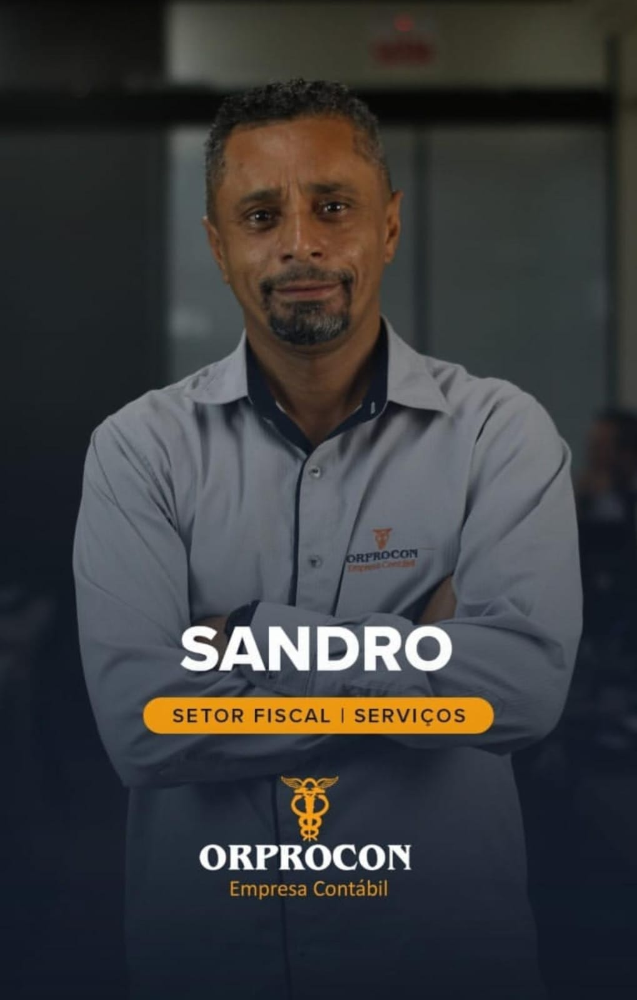
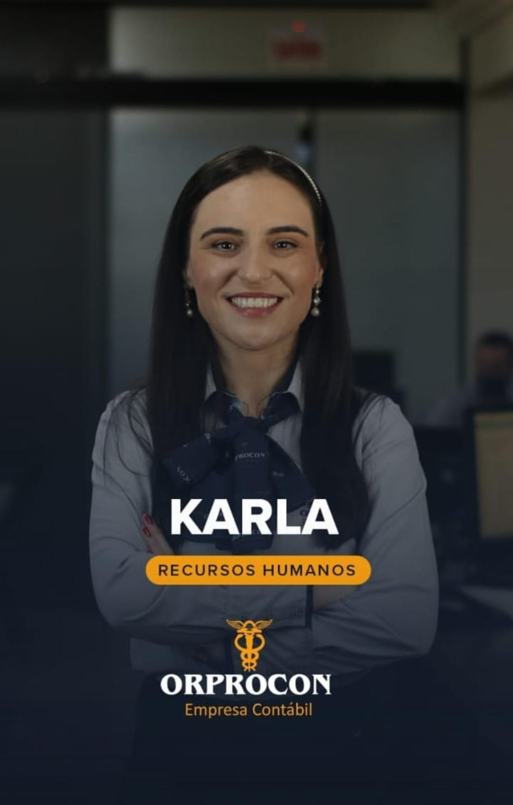
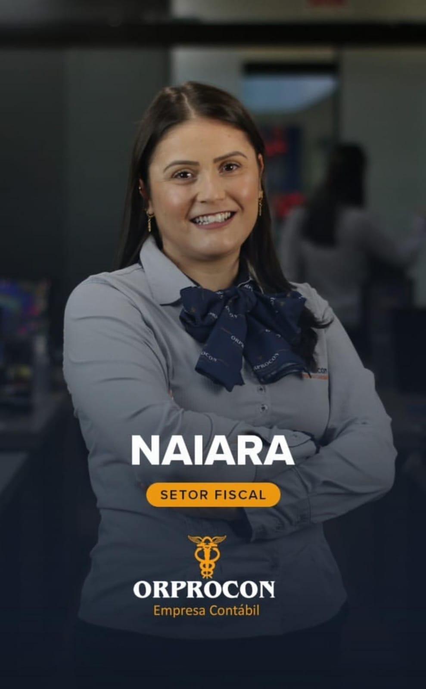
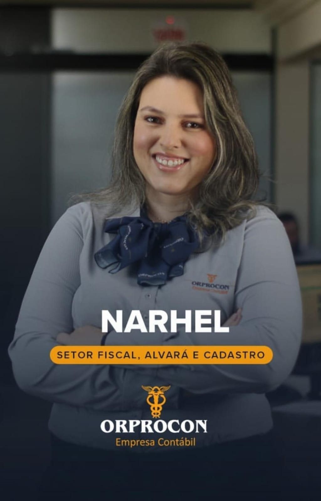

Há cinco décadas cuidando da saúde financeira, fiscal e tributária de empresas que movem a nossa região. Aliamos a solidez da tradição com a inovação digital para reduzir seus impostos e acelerar seu negócio.
Fundada há 50 anos em Tubarão/SC, a Orprocon Contabilidade construiu uma trajetória sólida pautada na ética, responsabilidade e parceria contínua com os empresários de Santa Catarina.
Não entregamos apenas guias e relatórios: oferecemos uma contabilidade consultiva que desburocratiza a rotina fiscal da sua empresa, orienta tomada de decisões financeiras e garante que você pague o menor imposto previsto em lei.

Soluções integradas para empresas do Simples Nacional, Lucro Presumido e Lucro Real.
Estudo prévio de viabilidade, enquadramento societário mais vantajoso, obtenção rápida de CNPJ e alvarás sem complicações.
Falar com especialistaElaboração precisa de balancetes, DRE, balanços patrimoniais e relatórios gerenciais claros para dar suporte às suas decisões financeiras.
Falar com especialistaAnálise minuciosa para enquadrar sua empresa no regime fiscal mais econômico e seguro, reduzindo custos tributários legalmente.
Falar com especialistaGestão completa da folha de pagamento, admissões, rescisões, férias, conformidade com o eSocial e proteção nas relações trabalhistas.
Falar com especialistaApuração rigorosa de tributos municipais, estaduais e federais, emissão de guias e entrega de obrigações acessórias sem risco de multas.
Falar com especialistaAlterações contratuais, entrada e saída de sócios, transformação de tipos jurídicos, cisões, incorporações e regularizações empresariais.
Falar com especialistaEmissão e renovação de certificados digitais e-CNPJ e e-CPF para garantir segurança total nas transmissões eletrônicas da sua empresa.
Falar com especialistaAcompanhamento preventivo de prazos, renovação de alvarás de funcionamento, vigilância sanitária e certidões junto a órgãos públicos.
Falar com especialistaConhecemos a fundo a legislação e as particularidades de cada atividade econômica.
Planejamento para médicos, dentistas e clínicas com foco em equiparação hospitalar, Livro-Caixa e redução substancial de IRPJ e CSLL.
Economia Tributária para MédicosOrientação precisa sobre ICMS, substituição tributária, controle de estoques, emissão de NFC-e e cruzamento fiscal sem riscos.
Conformidade e Redução de CustosEnquadramento correto no Simples Nacional com aplicação do Fator R, emissão de NFS-e e contabilidade sem fricção para profissionais liberais.
Agilidade 100% DigitalGestão contábil de obras, cadastro CNO, regularização junto à Receita Federal, retenções na fonte e desoneração da folha.
Segurança em Grandes ObrasMais do que cumprir obrigações, somos parceiros do crescimento seguro da sua empresa.
Você tem canal direto com contadores experientes que respondem suas dúvidas sem enrolação e sem menus telefônicos intermináveis.
Revisamos anualmente o regime de tributação da sua empresa para garantir que ela esteja sempre na opção que recolhe menos impostos.
Cuidamos de 100% da transição burocrática com o escritório anterior. Sua empresa migra sem parar de faturar e sem riscos.
Meio século de reputação ilibada em Tubarão e Santa Catarina, com conformidade total às normas do Conselho Regional de Contabilidade.
Profissionais altamente capacitados dedicados a cuidar da contabilidade da sua empresa com zelo e precisão técnica. Clique na foto para ampliar.













Tudo o que você precisa saber sobre a troca de contador, abertura de empresas e nossa metodologia.
É extremamente simples! Você só precisa manifestar seu desejo de trocar de escritório. A equipe da Orprocon entra em contato com seu contador anterior, solicita toda a documentação legal e histórico contábil, e realiza a transição sem nenhuma interrupção nas atividades da sua empresa.
Através do sistema 100% digital da Junta Comercial de Santa Catarina (JUCESC) e da agilidade do nosso departamento societário, a emissão do CNPJ costuma ocorrer entre 24 e 48 horas úteis após a assinatura digital dos sócios.
Atendemos empresas de toda a região da AMUREL (Capivari de Baixo, Laguna, Braço do Norte, Jaguaruna, etc.), de todo o estado de Santa Catarina e também clientes em outras regiões do Brasil, graças à nossa estrutura digital segura e em nuvem.
Realizamos uma simulação detalhada comparando os regimes do Simples Nacional, Lucro Presumido e Lucro Real, além de identificar benefícios fiscais como o Fator R (para prestadores de serviços), incentivos e equiparação hospitalar para clínicas. O objetivo é assegurar o menor imposto previsto na lei.
Você tem atendimento direto e humanizado via WhatsApp corporativo, telefone e e-mail com o setor responsável pelo seu assunto (Fiscal, Pessoal, Contábil ou Societário), além de poder agendar reuniões presenciais em nossa sede própria no centro de Tubarão.
Preencha o formulário e um de nossos especialistas entrará em contato rapidamente.
Av. Marcolino Martins Cabral, 1315 — Centro
Tubarão - SC, CEP 88701-001
CRC/SC 00328/0
Fale diretamente com nossa equipe comercial no WhatsApp para tirar dúvidas imediatas sobre sua empresa.
Chamar no WhatsApp